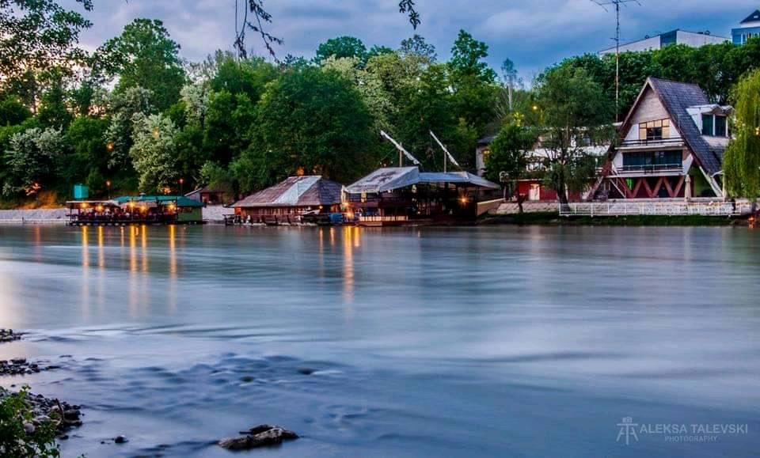

Grad kraljevskog imena nalazi se u samom centru Srbije, na mestu ušća reke Ibar u Zapadnu Moravu. Goste privlači kako zanimljivom istorijom čiji su tragovi vidljivi širom grada, tako i brojnim planinskim centrima u svojoj bližoj i daljoj okolini. Nadomak Kraljeva nalaze se planine Goč, Kopaonik, Golija, Troglov, Čemerno, Kotlenik, Stolovi... Duh grada i njegovu energiju najbolje ćete osetiti na lokalnim manifestacijama kao što su „Veseli spust” niz reku Ibar ili „Dani jorgovana”.
Grad Kraljevo bio je važna stanica na trgovačkom putu između Dubrovnika i Carigrada još u vreme Rimskog carstva, ali pravi procvat doživljava tek u srednjem veku. Sudbina ovog grada neraskidivo je povezana sa sudbinom srpske dinastije Nemanjić, koja je vladala ovim prostorima u srednjem veku. Nedaleko od Kraljeva, u manastiru Žiča krunisan je prvi srpski kralj Stefan Prvovenčani, dok glavni trg u Kraljevu danas nosi monaško ime njegovog brata Rastka, Sveti Sava. Nekada poznat pod nazivom Karanovac, grad na ušću reke Ibar svoj sadašnji naziv dobio je 1882. godine kada je kralj Milan Obrenović, na molbu lokalnog stanovništva, naredio preimenovanje grada. Svoj današnji izgled Kraljevo je dobilo u 19. veku. Tada su izgrađeni kružni trg i ulice s pravilnim ukrštanjem, dva upečatljiva i prepoznatljiva obeležja Kraljeva. Grad je možda i najlepši u vreme „Dana jorgovana” kulturne manifestacije koja se svake godine slavi u čast Jelene Anžujske, žene srpskog kralja Uroša I Nemanjića. Neposredno pre venčanja, srpski kralj naredio je podanicima da celom dolinom Ibra posade jorgovane kako bi buduću kraljicu ovaj predeo podsećao na njenu rodnu Provansu. Kraljevo ima i jedan od najlepših grbova u Srbiji. Upečatljiv grb grada sadrži sedam kruna na crvenom postolju, koje simbolišu sedam krunisanja srpskih srednjevekovnih kraljeva u obližnjem manastiru Žiča.
Legenda kaže da je srpski knez Miloš Obrenović lično iscrtao plan budućeg gradskog centra s glavnim trgom i mnoštvom ulica, i to u običnoj tepsiji s peskom. Taj plan će 1832. godine njegov arhitekta Laza Zuban sprovesti u delo. Centralnim trgom dominira Spomenik srpskim ratnicima nastradalim u balkanskim ratovima koji je s vremenom postao jedan od simbola Kraljeva. Najstarija svetinja u gradu, Crkva Svete Trojice, izgrađena je početkom 19. veka po naredbi kneza Miloša. U Kraljevu se nalazi i živopisna katolička crkva, prvobitno izgrađena za potrebe francuskih stručnjaka koji su učestvovali u podizanju fabrike aviona u Kraljevu početkom 20. veka. Ukoliko želite da saznate više o istoriji ovog kraja, posetite Narodni muzej u Kraljevu koji čuva na hiljade vrednih istorijskih, arheoloških, etnoloških i umetničkih artefakata.
Kraljevo se nalazi na ušću reke Ibar u Zapadnu Moravu, a nedaleko od grada nalaze se i manje reke Studenica, Ribnica i Gruža koje pružaju brojne mogućnosti za ribolov. U letnjem periodu, vode Ibra postaju prijatne i tople, idealne za kupanje i vožnju čamcem, kajakom ili kanuom. Na ovoj reci se svake godine održava i „Veseli spust” – kada se okupi na hiljade ljubitelja raftinga, koji uz muziku i dobro raspoloženje uživaju u plovidbi od srednjevekovnog grada Magliča do gradske plaže u Kraljevu. Obližnja planina Goč nudi nebrojene mogućnosti za sport i rekreaciju od noćnog i dnevnog skijanja, do pešačkih staza i raznih sportskih terena. Ski-staze prilagođene kako početnicima tako i iskusnim skijašima, pružiće vam priliku da uživate u snegu i unapredite svoje skijaške veštine, dok će vam tereni za košarku, odbojku, rukomet i tenis osigurati dobru zabavu u letnjim mesecima. Počeci duhovnosti u Kraljevu sežu daleko u prošlost. O tome svedoče i srednjevekovni manastiri izgrađeni u njegovoj okolini. Manastir Žiča bio je prvo središte srpske crkve kada je 1219. godine dobila nezavisnost. Čak sedam prestolonaslednika krunisano je u ovom manastiru, a za svako krunisanje otvarana su nova vrata, zbog čega Žiča i danas nosi nadimak „sedmovratna”. Manastir Studenica, zadužbina Stefana Nemanje iz 12. veka, upisan je na Uneskovu listu svetske kulturne baštine. Spoljašnjost crkve izgrađena je od snežno belog mermera, a fasade, prozori i portali ukrašeni su u duhu romanike zbog čega je ovaj manastir uvršten u kulturnu rutu Saveta Evrope – Transromaniku. Unutrašnjost crkve ukrašena je freskama bogatog kolorita i izuzetne prefinjenosti, oslikanih u duhu Vizantije.